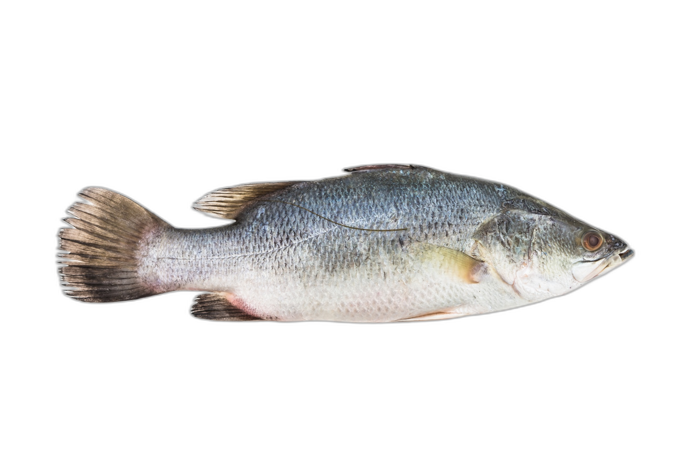
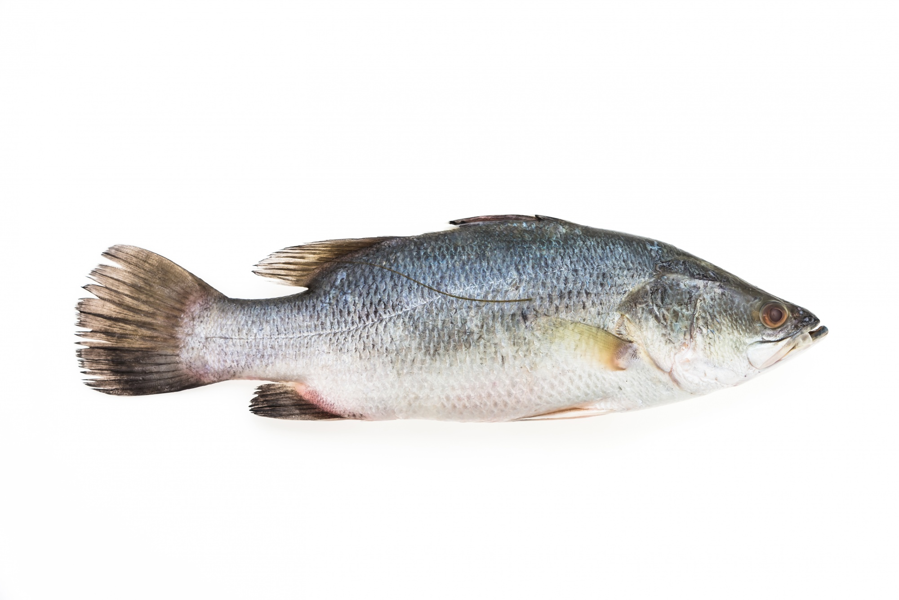

Home
Map
Comments
About
🐟 The Poor Fish Wants to See the World!

🌍 Where Has the Fish Traveled?
Where Should the Fish Travel Next?
Select a Country
Send the Fish Here
💬 Share Your Thoughts!
Submit
💬 Share Your Thoughts!